What did you learn last lesson?
JavaScript downsides
JavaScript offers incredible flexibility as a programming language. Although that flexibility and the fact that it was initially created in 10 days means that it also has numerous bad parts (leading to a book called 'JavaScript: The Good Parts').
JavaScript libraries
To address certain downsides of the JavaScript language and to add convenient functionality, new JavaScript libraries began to emerge.
jQuery quickly took its place as the most highly used library, initially due to its cross-browser compatibility.
What is jQuery?
jQuery is a JavaScript library created by John Resig (released in 2006).
jQuery benefits
- Cleaner and more intuitive syntax
- Easier DOM traversal (filtering target elements)
- Additional methods for simple DOM manipulation (e.g. adding/removing classes)
- Easy animation of elements and window (e.g. fading out an element, scrolling to a target element)
- AJAX - send and receive data from the server without refreshing the page
- Great plugin ecosystem for rapid development
Including jQuery
- Download the source code 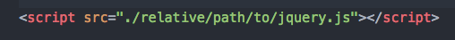
- Use a Content Delivery Network (CDN) (https://cdnjs.com/) 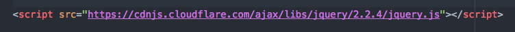
Be sure to include your JavaScript file AFTER you include jQuery!
$
The jQuery library gives access to the jQuery function, which
allows use of all the jQuery functionality.
Developers are lazy though, so it was shortened to $.
Document ready
Before we can start interacting with elements using jQuery, we need to make sure that the elements are actually available in the DOM.
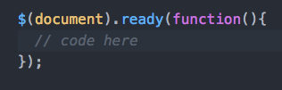But this can also be shortened to:
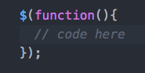jQuery selector syntax
Using vanilla JavaScript, the code to select elements is pretty verbose:
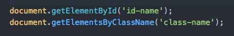Whereas with jQuery it is much simpler (recognise the selectors?):
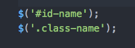Remember the 3 steps to building interactivity?
- Event target (find an element(s) that will trigger an action)
- Event listener (listen for that action)
- Event handler (perform an output as a result of that action)
Events
Events and making them easy to implement are the bread and butter of jQuery:
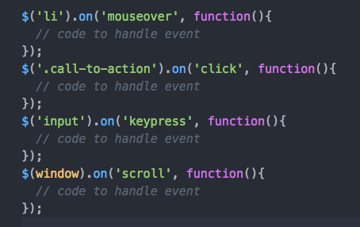A full list of jQuery's events can be found here.
event.preventDefault()
Some elements have default actions that they perform when interacted with. The 3 most common examples of this are:
-
<a href="/path">Link Text</a>anchor tags - they want to redirect to the given path -
<button>Button Text</button>button tags - they want to submit a form (if they have a form as an ancestor) -
<form></form>forms - when they submit, they refresh the page
event.preventDefault() (cont.)
When an event listener is created, an event object becomes available within the handler function. This allows access to more information and actions relating to the event. The method we are interested in here is:
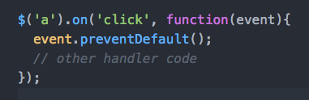DOM manipulation
jQuery allows us to easily change the contents of the DOM and also change the appearance of DOM nodes (elements) in response to an event. Here are a few of the most common DOM manipulation methods:
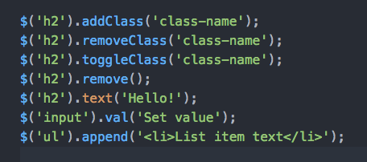A full list of DOM manipulation methods can be found here.
jQuery animation
Another benefit of using jQuery over vanilla JavaScript is the ability to easily add animation to elements:
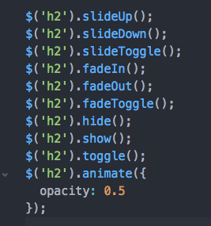A full list of jQuery's effects methods can be found here.
jQuery Exercise
In pairs, go through the jQuery exercise steps.
AJAX
Asynchronous JavaScript and XML (AJAX) allows for the sending and receiving of data to and from a server, enabling a page's display to update without the need for a full window reload.
The data being sent and received is usually in the form of JavaScript Object Notation (JSON), so we should actually be referring to it as AJAJ.
If you would like to learn more about AJAX, this Sitepoint article is a good starting point.
Keyword 'this'
While creating that FAQ page, we came across a new JavaScript keyword. When
relating to interactivity, $(this) will return a jQuery object
of the target element that has been interacted with.
Keyword 'this' (cont.)
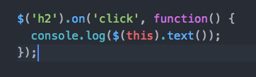 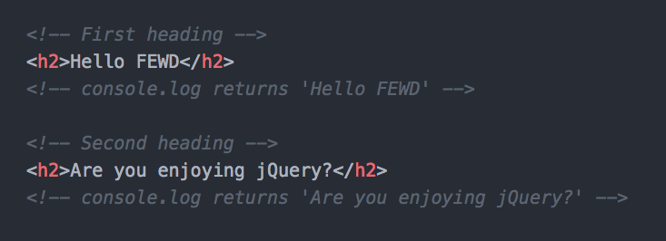Keyword 'this' (cont.)
In JavaScript, 'this' can change reference based on where it is written. For a full reference please refer to this MDN article.
For how we are using JavaScript though, we will be using 'this' to return the target element in an interaction.
DOM traversal
DOM traversal is effectively the filtering of elements through a given set of parameters and is especially useful when combined with 'this'.
Here are some examples of traversal methods:
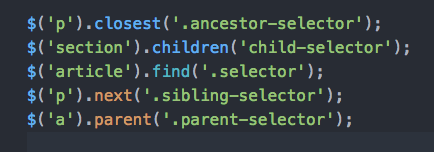A full list of jQuery's DOM traversal methods can be found here.
Chaining
Another concept we saw in the FAQ example was method chaining. This is a great way to reduce the amount of code written and increase readability.
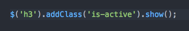Chain methods wherever possible to write cleaner code.
Have a go at writing the traffic light switcher again, but this time using jQuery.
Key Takeaways
-
jQuery is a JavaScript library that was released in 2006
-
jQuery improves the syntax of JavaScript to make it easier to target elements and handle user interactions
-
jQuery selectors are the same as selectors used when styling elements in CSS
-
The keyword 'this' can be used to target actions on the specific element the user has interacted with